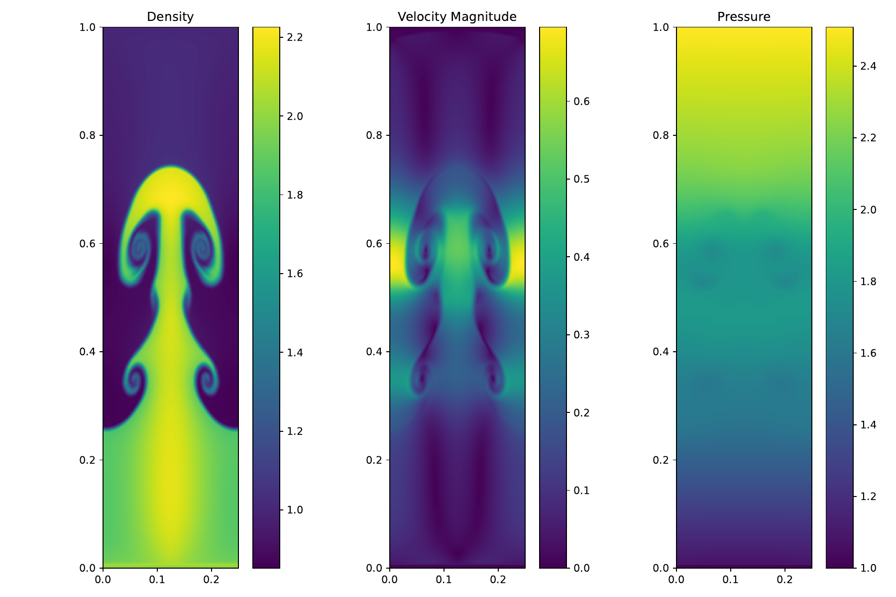

AEGIS

Behind the research
I develop numerical methods that balance accuracy in smooth flow with stability near shocks. My AEGIS (Adaptive Edge-Guided Interface Scheme) research includes applications to the Euler equations and extensions to ideal magnetohydrodynamics.
Figure depicts the Rayleigh-Taylor Instability, as simulated by AEGIS, at t=1.95
Explore the research